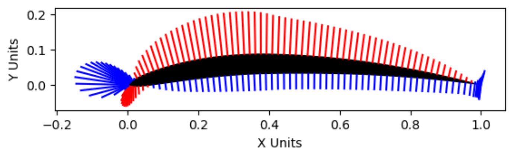

07 / Aerodynamics & design research / Completed team study
AE311 · Real-world problem lead · Three-person team
Comparing NACA airfoils with panel methods and XFOIL
I led the glider design research and tradeoff framing for a three-person airfoil study. The team compared camber, thickness, and angle of attack across sixteen cases using a source/vortex panel method and XFOIL pressure distributions; my contribution connected the analysis to airfoil and wing-configuration choices.
- My contribution
- Glider design research, tradeoff framing, airfoil-selection context, and report coauthorship
- Tools
- Design research · Panel methods · NACA airfoils · XFOIL
- Outcome
- 4 airfoil sections × 4 angles of attack, with XFOIL comparisons

Start with the design context
I led the real-world research for the three-person study, surveying glider history, modern designs, and tradeoffs in airfoil shape, aspect ratio, and wing configuration. That work helped connect practical design questions to the team’s numerical investigation.
The technical study compared NACA 0006, 0012, 6406, and 6412 at −3°, 0°, 3°, and 6° incidence: sixteen tabulated cases spanning changes in camber and thickness.
Compare pressure and lift
The team used a combined source/vortex panel method with impermeability and Kutta boundary conditions. Surface pressure and circulation provided two routes to lift, while XFOIL pressure distributions supplied a comparison reference.
The Python solver was adapted from JoshTheEngineer, as credited in the report. Jackson Rees held the technical-lead role and implemented the solver; my contribution was the design research and its connection to the analysis.
{kind=link}

Results & design interpretation
NACA 6412 produced the highest lift coefficient among the four airfoils at the tested angles.
The report found that camber and thickness affected lift and the pressure distribution. Cambered sections produced positive lift at zero incidence, while symmetric sections were approximately zero. For NACA 6412, the reported lift coefficient at zero degrees was about 0.729.
The result supports the report’s comparison of the tested geometries. The steady, inviscid, attached two-dimensional model does not predict stall, viscous drag, or complete-aircraft glide performance, so highest modeled lift is a narrower result than best overall glider performance.